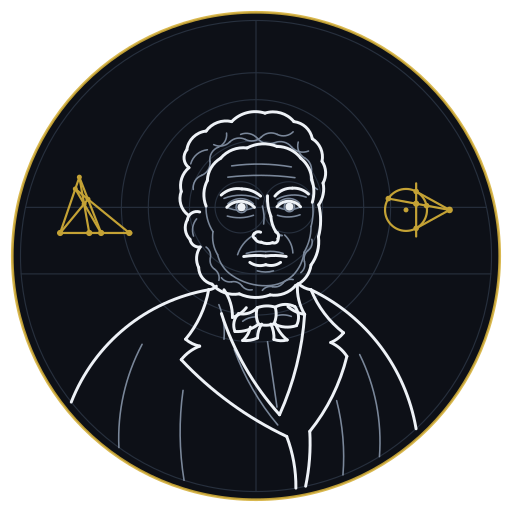

Karl Georg Christian von Staudt¶

Karl Georg Christian von Staudt (1798–1867) achieved one of the boldest purifications in the history of mathematics: stripping projective geometry of every trace of distance, angle, and coordinates. Using only incidence and the complete quadrangle, he defined harmonic separation, proved the Fundamental Theorem of Projective Geometry, and erected his Rechnung mit Würfen—the Algebra of Throws—to recover field arithmetic from an unmarked straightedge alone. This archive presents both his 1847 and 1857 treatises in synchronized four-track editions.
Books in This Collection¶

Nuremberg · 1847 · 12 Sections · 4 Synchronized Tracks
Geometry of Position (*Geometrie der Lage*) — Staudt’s foundational 1847 treatise rebuilding projective geometry from pure incidence: ideal elements, complete-quadrangle harmonic conjugates, the Fundamental Theorem of Projective Geometry, and conics as polarities without measurement.
Nuremberg · 1857 · Zweites Heft · 4 Synchronized Tracks
Contributions to the Geometry of Position (*Beiträge zur Geometrie der Lage*) — Staudt’s 1857 sequel introducing throws (Würfe) and constructing straightedge addition and multiplication directly on a projective carrier, establishing intrinsic projective coordinates prior to Hilbert.
Key Features¶
Four Synchronized Tracks
Read Staudt’s German primary text alongside a faithful English translation, concise analytical summaries, and scholarly concordance notes on every section.
Metric-Free Straightedge Figures
Calibrated vector plates trace ideal sheaves, complete quadrangles, self-conjugate polarities, and straightedge throw addition and multiplication.
Symbolic Throw Arithmetic
Executable Python modules and Demos implement Staudt’s harmonic fourth solver and exact throw calculus over geometor.staudt.
Reference & Project¶
Scholarly Apparatus
People — Profiles of von Staudt, Poncelet, Möbius, Steiner, Hilbert, and Pasch
Bibliography & Concordance — Primary Nuremberg editions and cross-corpus links
Glossary — German/English terminology of Grundgebilde, Würfe, and polarities
About This Project
About & Using This Edition — Editorial scope, 4-track layout, and reading guide
Demos & Python Modules — Straightedge algorithms and symbolic tests
Project Log — Development notes and codex milestones